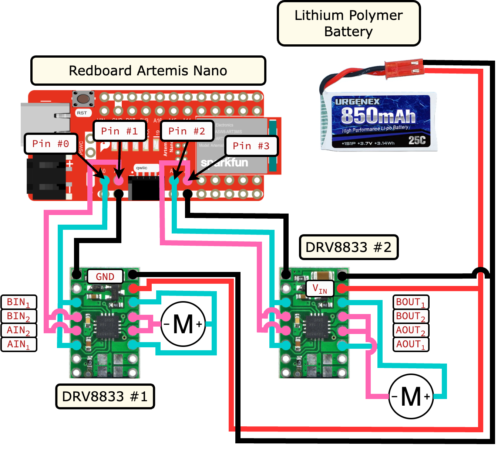

Lab 4: Open-Loop Motor Control
Now that we can get data around us, we can integrate our electronics into our robot, including controlling the wheel-driving motors!
Prelab
For this lab, we expanded on our hardware setup by introducing two DRV8833 motor drivers to control the motors. These connect to an external battery to drive the motors, as well as with PWM inputs (and ground) from the Artemis. Accordingly, I chose analog pins to be able to provide the PWM output (A0 - A3)
{kind=link}
External Battery
Note that the motor drivers/motors are connected to a separate power supply than the other electronics. The relatively high power, fast-switching motor supply will cause EMI ripples in the power supply. To avoid this interfering with our other sensitive electronics (such as out sensors and microcontroller), the power supplies are decoupled.
Motor Drivers - Oscilloscope
To incrementally verify our motor driving capability, I first connected one motor driver to the Artemis. The PWM signals were generated on the motor driver inputs, and the outputs were connected to the oscilloscope probes for measuring, with the motor voltage driven by a voltage supply.
Power Supply
The DRV8833 datasheet notes that the motor voltage can range from 2.7V to 10.8V. However, we will be driving our motors with a 3.7V battery, so I chose to set the voltage supply to 3.7V to be more realistic.

Oscilloscope Probe setup for Motor Drivers (only using one initially, then both)
The code snippet below demonstrates the PWM functionality by sweeping
the duty cycle of a forward-driving motor, where the IN1 pin is kept
high, and IN2 switches rapidly (inspired by Nila Narayan’s example
from 2024):
#define HIGH_PIN 0 // AIN1 / BIN1
#define PWM_PIN 1 // AIN2 / BIN2
void setup(){
pinMode( HIGH_PIN, OUTPUT );
pinMode( PWM_PIN, OUTPUT );
}
void loop(){
analogWrite( HIGH_PIN, 255 );
for( int i = 0; i < 255; i = i + 1 ){
analogWrite( PWM_PIN, i );
}
}
Once we verified one motor driver, I soldered the second one to verify it as well; the snippet below similarly sweeps the duty cycle, but increases the duty cycle of the first forward-driving motor while decreasing that of the second reverse motor.
#define MOTOR1_IN1 0
#define MOTOR1_IN2 1
#define MOTOR2_IN1 2
#define MOTOR2_IN2 3
void motor1_forward(uint8_t i) {
analogWrite(MOTOR1_IN1, 255 );
analogWrite(MOTOR1_IN2, i );
}
void motor2_reverse(uint8_t i) {
analogWrite(MOTOR2_IN1, 255 - i );
analogWrite(MOTOR2_IN2, 255 );
}
void setup() {
pinMode(MOTOR1_IN1, OUTPUT);
pinMode(MOTOR1_IN2, OUTPUT);
pinMode(MOTOR2_IN1, OUTPUT);
pinMode(MOTOR2_IN2, OUTPUT);
}
void loop() {
for (int i = 0; i < 255; i = i + 1) {
motor1_forward( i );
motor2_reverse( i );
}
}
Motor Drivers - Wheels
Once we had verified basic functionality of the drivers, we could connect them to the wheels. First, I connected one driver to one side of wheels, and had it run them forward and in reverse repeatedly:
#define MOTOR1_IN1 0
#define MOTOR1_IN2 1
void motor1_forward(uint8_t i) {
analogWrite(MOTOR1_IN1, 255 );
analogWrite(MOTOR1_IN2, i );
}
void motor1_reverse(uint8_t i) {
analogWrite(MOTOR1_IN1, 0 );
analogWrite(MOTOR1_IN2, i );
}
void motor1_stop() {
analogWrite(MOTOR1_IN1, 255 );
analogWrite(MOTOR1_IN2, 255 );
}
void setup(){
pinMode( MOTOR1_IN1, OUTPUT );
pinMode( MOTOR1_IN2, OUTPUT );
}
void loop(){
motor1_forward(128);
delay(1000);
motor1_stop();
delay(1000);
motor1_reverse(128);
delay(1000);
motor1_stop();
delay(1000);
}
From there, I soldered on the second motor driver, such that we can re-use the code to run both motors (with minor changes to the functions reflecting different orientations of the motors)
#define MOTOR1_IN1 0
#define MOTOR1_IN2 1
#define MOTOR2_IN1 2
#define MOTOR2_IN2 3
void motor1_forward( uint8_t i )
{
analogWrite( MOTOR1_IN1, 255 );
analogWrite( MOTOR1_IN2, i );
}
void motor2_forward( uint8_t i )
{
analogWrite( MOTOR2_IN2, 255 );
analogWrite( MOTOR2_IN1, i );
}
void motor1_reverse( uint8_t i )
{
analogWrite( MOTOR1_IN1, 0 );
analogWrite( MOTOR1_IN2, i );
}
void motor2_reverse( uint8_t i )
{
analogWrite( MOTOR2_IN2, 0 );
analogWrite( MOTOR2_IN1, i );
}
void motor_stop()
{
analogWrite( MOTOR1_IN1, 255 );
analogWrite( MOTOR1_IN2, 255 );
analogWrite( MOTOR2_IN1, 255 );
analogWrite( MOTOR2_IN2, 255 );
}
void setup()
{
pinMode( MOTOR1_IN1, OUTPUT );
pinMode( MOTOR1_IN2, OUTPUT );
pinMode( MOTOR2_IN1, OUTPUT );
pinMode( MOTOR2_IN2, OUTPUT );
}
void loop()
{
motor1_forward( 128 );
motor2_forward( 128 );
delay( 1000 );
motor_stop();
delay( 1000 );
motor1_reverse( 128 );
motor2_reverse( 128 );
delay( 1000 );
motor_stop();
delay( 1000 );
}
This also meant that we could permanently solder the motor drivers to the 850mAh battery instead of the power supply, demonstrating that the most power-intensive portion of the circuit can be battery powered.
Electronics Installation
From here, we could permanently install the electronics in the car, making the entire system independent!
I chose to have my motor drivers on a separate side from the rest of the electronics, to avoid undue EMI
My ToF sensors are currently mounted on the front and side, as per Lab 3: Time-of-Flight Sensing
The IMU (next to the Artemis and battery) is as upright as possible, for ease of calculating position

Minimum PWM
Experimentally, I determined that the minimum PWM needed to run the car in a straight line was 35 (corresponding to a duty ratio of \(\frac{35}{255}=0.137255\)); any less, and the motors would not have enough power to start moving.
void motor_pwm( uint8_t pwm )
{
// Motor 1
analogWrite( MOTOR1_IN1, 0 );
analogWrite( MOTOR1_IN2, pwm );
// Motor 2
analogWrite( MOTOR2_IN1, 0 );
analogWrite( MOTOR2_IN2,
(int) ( (float) pwm ) * stored_calibration_factor );
}
However, for turning, I found that the required PWM was 80 (corresponding to a duty ratio of \(\frac{80}{255}=0.31373\)). This reflects the motors now opposing directions, and thereby requiring more power to generate movement.
void motor_pwm_turn( uint8_t pwm )
{
// Motor 1
analogWrite( MOTOR1_IN1, 0 );
analogWrite( MOTOR1_IN2, pwm );
// Motor 2
analogWrite( MOTOR2_IN1, 255 );
analogWrite( MOTOR2_IN2,
(int) ( (float) 255 - pwm ) * stored_calibration_factor );
}
Calibration
Additionally, the motors by themselves may move at slightly different speeds; to combat this, I introduced a calibration factor to scale the PWM of the left motor by. This was communicated by the Artemis, so that factors could be iterated quickly; I found that the factor only needed to be 0.99 to remain centered on a 6 meter tape line.
void calibrate( float calibration_factor )
{
// Motor 1
analogWrite( MOTOR1_IN1, 255 );
analogWrite( MOTOR1_IN2, 150 );
// Motor 2
analogWrite( MOTOR2_IN1, 255 );
analogWrite( MOTOR2_IN2, (int) 150.0 * calibration_factor );
}
Open-Loop Control
From here, we could drive our car from Python! I chose to communicate a variety of commands, along with the time in milliseconds to spend on each:
void forward()
{
// Motor 1
analogWrite( MOTOR1_IN1, 255 );
analogWrite( MOTOR1_IN2, 180 );
// Motor 2
analogWrite( MOTOR2_IN1, 255 );
analogWrite( MOTOR2_IN2, (int) 180.0 * stored_calibration_factor );
}
void backward()
{
// Motor 1
analogWrite( MOTOR1_IN1, 0 );
analogWrite( MOTOR1_IN2, 75 );
// Motor 2
analogWrite( MOTOR2_IN1, 0 );
analogWrite( MOTOR2_IN2, (int) 75.0 / stored_calibration_factor );
}
void left()
{
// Motor 1
analogWrite( MOTOR1_IN1, 255 );
analogWrite( MOTOR1_IN2, 100 );
// Motor 2
analogWrite( MOTOR2_IN1, 0 );
analogWrite( MOTOR2_IN2, (int) 155.0 / stored_calibration_factor );
}
void right()
{
// Motor 1
analogWrite( MOTOR1_IN1, 0 );
analogWrite( MOTOR1_IN2, 155 );
// Motor 2
analogWrite( MOTOR2_IN1, 255 );
analogWrite( MOTOR2_IN2, (int) 100.0 * stored_calibration_factor );
}
ble.send_command(CMD.FORWARD, str(1000)) # Forward for 1 second
time.sleep(1)
ble.send_command(CMD.LEFT, str(400)) # Turn left for 0.4 seconds
time.sleep(1)
ble.send_command(CMD.BACKWARD, str(1000)) # Backwards for 1 second
time.sleep(1)
ble.send_command(CMD.RIGHT, str(400)) # Turn right for 0.4 seconds
time.sleep(1)
ble.send_command(CMD.FORWARD, str(1000)) # Forward for 1 second
[ECE 5160] PWM Continued
When performing the one-motor experiment previously on the oscilloscope, I additionally used cursors to measure the time between PWM peaks:

Our PWM peaks occur at a frequency of \(\frac{1}{5.440ms} = 184Hz\),
with each change in the argument to analogWrite (0 - 255) providing
\(21.25\mu s\) difference in duty cycle. While this experimentally
seems fast enough for our motors (especially given that our motor drivers
only sample at \(50kHz \rightarrow 20ms\)), generating a faster PWM
signal with an appropriate driver could theoretically make the motor
movements smoother (with fewer low-frequency signals to perturb from the
DC operating point).
While the above value of 35 for analogWrite allowed the car to start
moving, we can also get away with a slightly lower value once the car is
moving. I experimentally found that a PWM value of 25 (Duty Ratio:
\(\frac{25}{255}=0.098\)) could sustain movement after a minimum of
1 second startup (by first finding the minimum PWM after movement
started for 5 seconds, then decreasing the time spent at analogWrite(35)
until the car wouldn’t move after switching to analogWrite(25))
motor_pwm from before)void motor_pwm_decay( uint8_t pwm, int decay_ms, uint8_t pwm_decay )
{
motor_pwm( pwm );
delay( decay_ms );
motor_pwm( pwm_decay );
}
Acknowledgements
Some of the examples and report structure were adapted from Nila Narayan (2024)